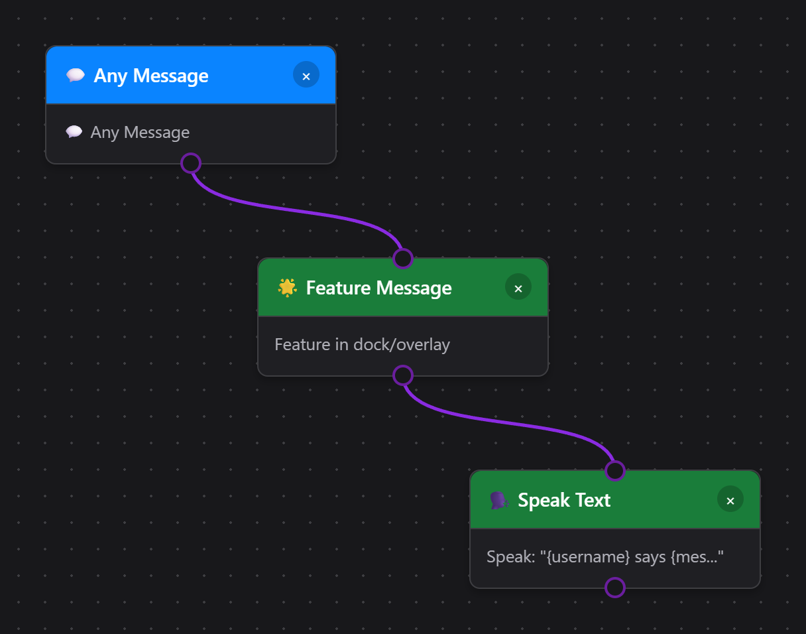
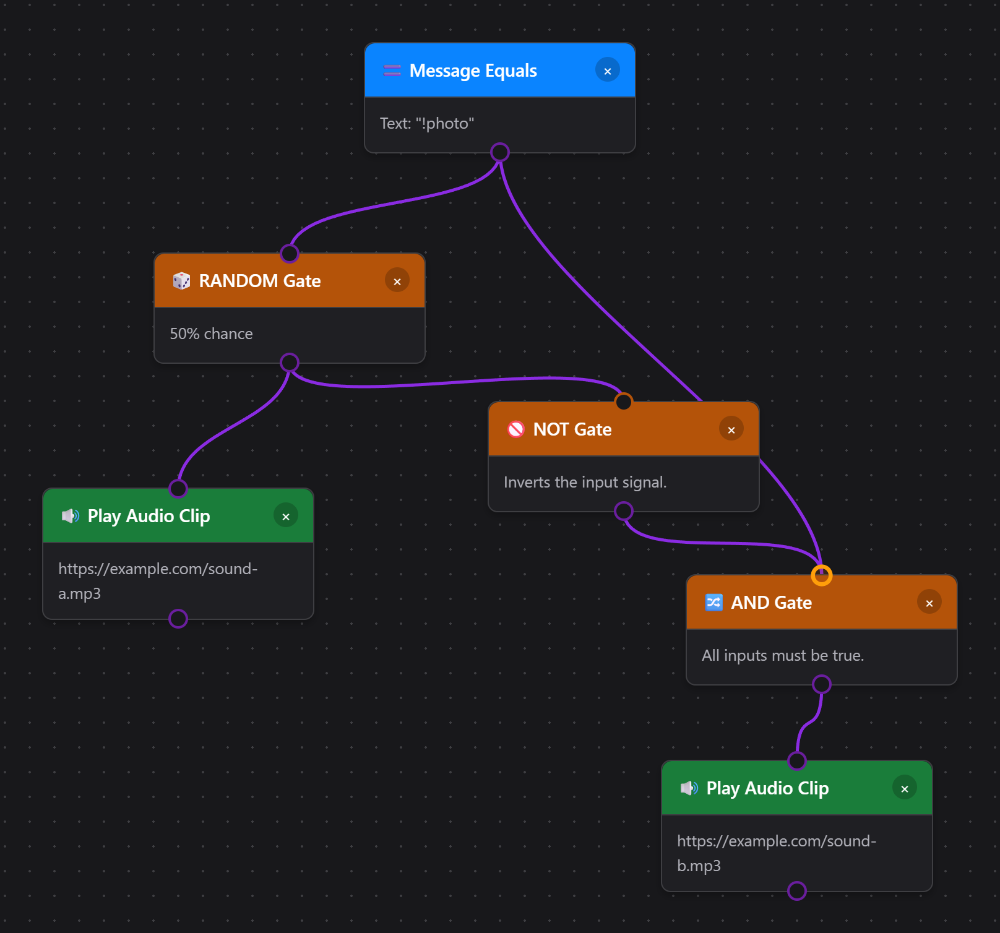
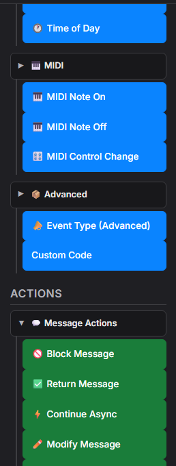
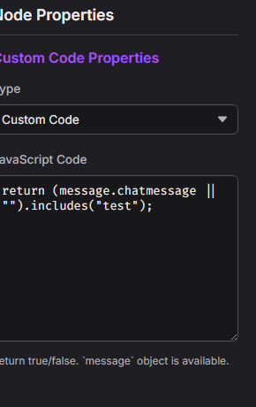

0. نظرة سريعة
ما هذا المحرر؟
محرر Event Flow هو طبقة «الأتمتة المتقدمة» في Social Stream Ninja. يعمل فوق مفاتيح التبديل البسيطة في النافذة المنبثقة ويتيح لك كتابة منطق التوجيه الخاص بك. استخدمه عندما تحتاج إلى:
- مرّر الدردشة بين الخدمات مع مرشحات (مثل نسخ Twitch إلى Discord مع حظر الأوامر).
- أنشئ أوامر قائمة على الولاء أو ألعاب كلمات مفتاحية أو بوابات للسحب باستخدام منطق AND/OR/NOT.
- فعّل تراكبات مخصصة أو أصواتًا أو مشاهد OBS أو webhooks بناءً على البيانات التي تُثريها في التدفق.
- امزج منصات متعددة داخل أتمتة واحدة (توجيه Kick وTwitch وYouTube عبر تدفق واحد).
اعتبر النافذة المنبثقة «إعدادات سريعة جاهزة»، وEvent Flow مجموعة أدوات لمسارات عمل مخصصة.
البدء والأساسيات
- افتح محرر Event Flow من قائمة لوحة التحكم الرئيسية (في تطبيق سطح المكتب أو الإضافة).
- يُحفظ كل مشروع محليًا إلى أن يُصدَّر. استخدم
Exportللنسخ الاحتياطي أو المشاركة. - اعمل داخل مساحات عمل تُسمى تدفقات. يمكن لكل تدفق الاشتراك في منصات متعددة في الوقت نفسه.
العقد في لمحة
- المدخلات (المنافذ اليسرى) تتوقع سياق الرسالة.
- المخرجات (المنافذ اليمنى) تُخرج السياق نفسه مع أي تعديلات.
- قد تُخرج العقد المنطقية قناة
trueوقناة اختياريةfalse.
بنية الحمولة
تحمل كل رسالة كائن JSON. وتتبع المفاتيح الإلزامية docs/event-reference.html (platform وtype وchatname وchatmessage وغيرها). أرفق البيانات المخصصة ضمن meta.
يبدأ كل تدفق بمشغّل
لا تعمل عقد الإجراءات (الخضراء) من تلقاء نفسها — ولا تُنفَّذ إلا عندما تكون نتيجة عقدة مشغّل (زرقاء) سابقة لها true. يبدو التدفق المكوّن من إجراءات متسلسلة فقط صالحًا، لكنه يظل خاملًا لأن لا شيء يبدأ السلسلة. تصف أسماء العقد ما تفعله، وليس متى يحدث: إبراز الرسالة (Feature Message) يُبرز رسالة عندما يصل إليه التدفق — ولا يعمل عندما تُبرز رسالة في مكان آخر.


تراكب Flow Actions (خرج الإجراءات)
اختر تبرع: احتفال + كلام لحركة جاهزة ومقطع شكر اصطناعي، أو القالب المتقدم تبرع: حركة + صوت + مرشح OBS . تبدأ قوالب التنبيهات الجديدة معطلة لتتمكن من ضبطها واختبارها أولًا. لقالب OBS، اختر مصدرًا والمرشح نفسه الذي يكون معطلًا عادةً في إجراءَي المرشح.
تشغيل مقطع صوتي (Play Audio Clip) وMulti-Alerts يشتركان الآن في مكتبة من 17 صوتًا: تصفيق وقرع طبول واندفاع هواء وآلة نقود وتأثيرات أخرى، وأربع عبارات إنجليزية اصطناعية مسماة، وأصوات بسيطة. استماع / إيقاف (Listen / Stop) يعرض معاينة محلية مع حالة تشغيل ظاهرة. لا يزال بإمكانك رفع تسجيل أو اختيار ملف محلي للتطبيق. للأسماء أو الرسائل المتغيرة، استخدم الإجراء الموجود نطق النص (Speak Text) .
يشغّل Event Flow الصوت عبر Flow Actions كمصدر متصفح؛ ويشغّل Multi-Alerts الصوت عبر مصدر متصفح خاص به. أبقِ الصوت مفعّلًا في واحد فقط للحدث نفسه لتجنب التشغيل المزدوج. انتقل إلى عقدة تدفق بمفتاح Tab واضغط Enter أو المسافة لتحرير خصائصها.
العقد مثل تشغيل مقطع صوتي (Play Audio Clip), عرض تراكب وسائط (Display Media Overlay)، وعناصر تحكم OBS تحتاج إلى واجهة عرض. وهذه الواجهة هي صفحة تراكب Flow Actions المقدمة من actions.html. أبقِه يعمل في برنامج البث لديك (OBS أو لوحات متصفح Streamer.bot أو غيرها) حتى تجد إجراءات Event Flow موضعًا للظهور.

- افتح نافذة Social Stream Ninja المنبثقة الرئيسية (النافذة المحمّلة من popup.html أو أيقونة الإضافة).
- مرّر إلى بطاقة “Flow Actions”. استخدم [نسخ الرابط] أو انقر على الرابط داخل البطاقة.
- يبدو الرابط مثل
https://socialstream.ninja/actions.html?session=YOURSESSION. الصقه في مصدر متصفح OBS (يُقترح 1920×1080) أو افتحه في أي متصفح للتراكبات.
- في إجراء Play Audio Clip أو Display Media Overlay، انقر على اختيار ملف محلي (Choose Local File).
- انقر على نسخ رابط Flow Actions المحلي لـOBS (Copy Local Flow Actions URL for OBS) واستخدم رابط localhost المُنشأ بدلًا من رابط Flow Actions المستضاف.
- أبقِ SSApp يعمل. إذا نُقل ملف محدد، فعُد إلى الإجراء وانقر على إعادة الربط (Relink).
لا تستطيع إضافة Chrome تقديم ملفات القرص بمفردها. استخدم Upload أو رابطًا مستضافًا عندما لا يتوفر مرافق سطح المكتب. راجع دليل ملفات الوسائط لـ Event Flow للإعداد الكامل.
بعد تحميل ذلك التراكب، يمكنه:
- عرض GIPHY أو روابط وسائط مباشرة ونص وقصاصات احتفالية تُفعّلها تدفقاتك.
- تشغيل الأصوات (TTS والمقاطع الصوتية) محليًا ليسمعها المشاهدون.
- تواصل مع OBS عبر إعدادات WebSocket الموجودة ضمن قسم Flow Actions في النافذة المنبثقة (تبديل المشاهد وتبديل المصادر وتحديث نص GDI+/FreeType ومخزن الإعادة وغيرها).
- Browser Source API: متاح فقط عندما
actions.htmlيعمل داخل مصدر متصفح OBS مع مستوى الوصول المتقدم (Advanced Access Level). يعمل تبديل المشاهد هنا، ويمكن لإجراءات التسجيل والبث ومخزن الإعادة استخدامه كبديل احتياطي. - OBS WebSocket: يُوصى به للتحكم المتسق. تستخدم Flow Actions في Social Stream Ninja واجهة OBS WebSocket v5 API من OBS 28 أو أحدث وتتوقع مجموعة الطلبات الحديثة على المنفذ
4455. - كلمة المرور: اختيارية. أضف فقط
&obspw=...إلى رابط Flow Actions إذا كان خادم OBS مضبوطًا ليتطلب المصادقة. - تشخيص التراكب: أضف
&obsdebug=1إلى رابطactions.htmlإذا أردت شارة صغيرة مباشرة لاتصال OBS على التراكب أثناء استكشاف الأخطاء. - Set Text Source: يحدّث مُدخلات OBS Text (GDI+) وText (FreeType 2) مباشرة ويدعم متغيرات قوالب Event Flow مثل
{counterValue}و{counterTarget}. - تثبيتات 4.x القديمة: إذا كنت لا تزال تستخدم obs-websocket 4.x أو المنفذ
4444، فلن تعمل إجراءات المصدر والمرشح والكتم والنص إلى أن تتم ترقية OBS أو obs-websocket.
راجع دليل التحكم في OBS المخصص للاطلاع على كل مشغّل وإجراء وخطوة إعداد ووصفة مختبرة.
- افتح obs-websocket-test.html.
- تأكد من أن
GetVersion,GetCurrentProgramScene، وGetSceneListتنجح. - نفّذ فحص الإجراء المطابق هناك قبل اختبار أتمتة Event Flow كاملة.
1. ما الذي يمر عبر العقدة؟
تمرّر بيئة تشغيل Event Flow شيئين عبر كل سلك:
- الحمولة — كائن بيانات الحدث أو الرسالة.
- إشارة البوابة — قيمة true/false التي تخبر العقدة التالية بما إذا كان ينبغي تنفيذها.
false في عقدة Condition). يسهل ذلك بناء منطق احتياطي دون تكرار تدفقات كاملة.
متطلبات المدخلات
- مصادر الأحداث (Twitch Message وTimers وManual Trigger وغيرها) تتجاهل المدخلات السابقة — فهي تنشئ حمولتها الخاصة وتُصدر دائمًا
trueإلا إذا حدث خطأ في العقدة نفسها. - عقد التحويل والمنطق تقرأ الحمولة وقد تعيد كتابة الحقول أو تضبط الحالة أو تقلب إشارة البوابة إلى
false. - عقد الإجراءات لا تعمل إلا عندما تظل البوابة
true. ويمكنها مع ذلك إخراج حمولة محدثة إذا أردت مواصلة سلسلة الإجراءات.
أنماط المخرجات
مخرج واحد
توفر معظم العقد مخرجًا واحدًا. كل ما يدخل (الحمولة والبوابة) يخرج دون تغيير ما لم تعدّله العقدة.
مخرجات true وfalse
تُخرج عقد Condition وCompare وRegex وLogic منفذين. صحيح (True) تستمر عبر المنفذ الأخضر؛ false تتوفر على المنفذ الرمادي أو الأحمر.
التمرير كما هو مقابل التجاوز
تعدّل بعض العقد (Set Variable وMath وText Replace) الحمولة لكنها تظل تمرّر true/false من مدخلاتها. وتعيد عقد أخرى (NOT وAND وOR) حساب القيمة المنطقية بنفسها.
2. مرجع سريع للعقد المنطقية
تجيب هذه الكتل عن أكثر الأسئلة شيوعًا حول معنى true وfalse.
NOT
- المدخلات: قيمة منطقية واحدة (true/false) مشتقة من العقدة السابقة.
- المخرجات: القيمة المنطقية المعكوسة بالإضافة إلى الحمولة دون تعديل.
- السلوك الافتراضي: إذا لم يكن شيء موصولًا بمدخل NOT، فإن نتيجتها تكون
false، لذا يكون الخرجtrue.
AND
- المدخلات: إشارتان منطقيتان أو أكثر (A وB و...). يمكنك ترك المنافذ الإضافية فارغة.
- المخرجات:
trueفقط إذا كانت جميع المدخلات الموصولة تساويtrue. - استخدم AND عندما يجب استيفاء شروط متعددة في الوقت نفسه («مشترك» و «رسالة الدردشة تحتوي على !raffle»).
OR
- يصدر
trueإذا كان أيٌّ من المدخلات الموصولة يساوي true. - مفيد للمشغّلات متعددة المنصات: أوصل عقد رسائل Twitch وYouTube ببوابة OR واحدة، ثم وحّد الإجراء اللاحق.
لا. توفر عقد كثيرة بالفعل مرشحات شاملة (مثل “Filter User Level” مع “Contains Text”). استخدم AND فقط عندما لا تغطي الخيارات المدمجة تركيبتك، أو عندما تريد نقطة وصل منطقية قابلة لإعادة الاستخدام تشترك فيها فروع أخرى.
true. أبقِها موصولة بشيء ذي معنى أو عطّل العقدة حتى لا ترفع الحظر عن تدفق عن طريق الخطأ.
3. أمثلة تدفقات مصغرة
A. الرد التلقائي ما لم تكن الرسالة أمرًا
هنا تُصدر عقدة Regex true عندما تكون الرسالة أمرًا. نوجّه منفذ false إلى ردنا، فيتلقى المشاركون العاديون إقرارًا بينما تمر الأوامر ببساطة.
B. اشتراط فحوص متعددة باستخدام AND
تضمن عقدة AND ترحيل رسائل الأعضاء الذين يستخدمون الكلمة المفتاحية الصحيحة فقط إلى Discord. يرسل الفرعان نتيجتهما المنطقية إلى عقدة AND؛ وتمرّ حمولة الفرع الأول إلى العقد اللاحقة.
C. عقدة NOT لمنع التنبيهات المتكررة
State Check يُخرج القيمة true عندما يكون التنبيه مكتومًا. بعكس تلك النتيجة، تضمن عقدة NOT تشغيل الاحتفال فقط عندما يكون العلم false.
D. تشغيل أحد صوتين عشوائيًا

بوابة AND ليست اختيارية. ستُخرج عقدة NOT وحدها true كلما كانت بوابة RANDOM خاملة، لذا سيعمل الصوت B مع كل رسالة دردشة لا تطابق المشغّل. توصيل المشغّل إلى AND كمدخل ثانٍ يقصر الصوت B على الرسائل المطابقة فقط. يعمل النمط نفسه مع أي زوج من الإجراءات البديلة، وليس الصوت وحده.
4. منع الصدى والحلقات والتغذية الراجعة للترحيل
ترحيل الدردشة بين الواجهات أداة قوية، لكنه قد يسبب صدى لا نهائيًا إذا استمعت إلى خرجك نفسه. اتبع هذه الاحتياطات:
تميّز المشغّلات الواردة ووجهات Relay Chat الصادرة بين
youtube و youtubeshorts. استخدم إجراءَي ترحيل عندما ينبغي أن تصل الرسالة إلى كلا النوعين. راجع YouTube Shorts وEvent Flow.
الرسالة المرتدة هي رسالة صادرة تُلتقط مجددًا من دردشة الوجهة. تتخطى إجراءات Relay Chat الحالية هذه الرسائل المرتدة المعروفة؛ ولا يوجد مربع اختيار منفصل باسم No Reflections. لإخفاء عرضها أو تقييده في لوحة الإرساء والتراكبات، استخدم مرشح الرسائل المرتدة (Reflection Filter) بالقيمة حظر الكل (Block All), السماح بالأولى (Allow First)، أو السماح بالكل (Allow All). يتحكم هذا في العرض عند إعادة الاستقبال، لا في الإرسال. اتبع شرح ترحيل Twitch وYouTube خطوة بخطوة لإعداد كامل.
- تجنب أنظمة الترحيل المكررة. عطّل خيار Relay all العام عند استخدام مسارات Event Flow المكافئة، وتحقق من الخدمات الأخرى التي تربط الدردشات نفسها. لا يُضمن بقاء البيانات الوصفية المخصصة بعد المرور عبر دردشة منصة.
- استخدم عقد Debounce أو Cooldown للتنبيهات التي ينبغي أن تعمل مرة واحدة فقط كل X ثانية.
- اقطع الدورات عمدًا. إذا كان فرعان يغذي أحدهما الآخر، فأضف عقدة منطقية تفحص متغير حالة (“currentlyRelaying”) حتى يخرج التدفق مبكرًا عندما يكون العلم مفعّلًا.
5. المدخلات والمخرجات وأسئلة عملية
ما الذي يدخل إلى العقدة؟
- حمولة الرسالة كاملة.
- قيمة البوابة المنطقية (
true/false). - سياق اختياري (متغيرات الحالة والمؤقتات) تطلبه العقدة صراحةً.
ما الذي يخرج من العقدة؟
- الحمولة نفسها ما لم تعدّلها العقدة.
- قيمة بوابة منطقية يُعاد حسابها (للعقد المنطقية) أو تُمرَّر كما هي (للإجراءات).
- لا تغيّر معظم التأثيرات الجانبية (مثل إرسال الدردشة) الحمولة، لكن يمكن لإجراءات النقاط إرفاق حقول حالة مثل
pointsTotalأوpointsSpendErrorللمنطق اللاحق.
متى تتفرع؟
كلما أردت الاستجابة بشكل مختلف لـ true مقابل false. اسحب سلكًا من المخرج الملون المطلوب (الأخضر = true، والرمادي أو الأحمر = false) إلى العقدة التالية.
false ، ينتهي التدفق هناك ببساطة. وهذا مناسب للمرشحات («حظر كل ما يفشل في الفحص»)، لكن لا تنسَ توصيل مسار false إذا كنت تحتاج إلى بدائل احتياطية.
أسئلة وأجوبة شائعة
- هل يجب استخدام AND لكل زوج من المرشحات؟ لا. تتضمن عقد كثيرة فحوصًا متعددة (مثل مرشح الرسائل الأساسي الذي يدعم كلمة مفتاحية ودورًا). استخدم AND للتركيبات المتقدمة فقط أو عند دمج إشارات من عقد مختلفة.
- كيف تصل قيم true وfalse إلى عقدة NOT؟ أي عقدة ذات مخرج أخضر تُصدر
trueافتراضيًا. عندما يفشل شرط، تُصدرfalse. اربط ذلك السلك بـ NOT لعكس النتيجة. - هل تستطيع عقدة إخراج حمولة حتى إذا أرجعت false؟ نعم. تظل الحمولة تمر عبر مخرج false؛ ويعود إليك تحديد وجهة ذلك الفرع.
- كيف أطابق أعضاء فريق TikTok؟ اختر عضو فريق TikTok (TikTok Team Member) في عقدة User Role. يتعرف على مستويات وشارات TikTok Fan Club أو الفريق في الرسالة الواردة ولا يعتمد على إعدادات Main Chat Overlay.
- هل تستطيع كل عقدة Speak Text استخدام صوت مختلف؟ نعم. أدخل اسم صوت أو معرّفه المدعوم لدى الموفّر في تجاوز الصوت (Voice Override)، أو اتركه فارغًا لاستخدام إعداد TTS الافتراضي في Flow Actions.
6. مرجع متغيرات القوالب
تدعم عدة عقد إجراءات (Show Text وSet Text Source وSend Message وRelay Chat وTTS Speak وCall Webhook وPrint Thermal Label) متغيرات القوالب تُستبدل ببيانات الحدث وقت التشغيل. ضع أسماء المتغيرات بين أقواس معقوفة مثل {username}.
المتغيرات الأساسية (متوافقة مع الإصدارات السابقة)
| المتغير | الاسم البديل | الوصف | مثال |
|---|---|---|---|
{username} | {chatname} | اسم عرض المستخدم | CoolViewer123 |
{message} | {chatmessage} | نص رسالة الدردشة | مرحبًا بالجميع! |
{source} | - | اسم المنصة (بحرف أول كبير) | Twitch، YouTube |
{type} | - | اسم المنصة (خام) | twitch, youtube |
{donation} | {hasDonation} | تسمية عرض التبرع أو الإكرامية | $5.00، 500 bits |
المتغيرات الموسعة
| المتغير | الوصف | مثال |
|---|---|---|
{displayname} | اسم العرض (حقل بديل) | CoolViewer123 |
{donoValue} | مكافئ التبرع بالدولار الأمريكي، المقدم أو المقدر؛ ويستمد Event Flow قيم العتبات من الحقل الموحّد hasDonation بصيغ مثل القيمة، $القيمة أو القيمة + الوحدة أو وحدة وقيمة بصيغة مختصرة. تستخدم الوحدات الافتراضية المسماة غير المعروفة معدل 100 وحدة = $0.01 USD؛ وتستخدم هدايا TikTok غير المسعّرة عملة واحدة لكل هدية ($0.01 لكل منها). {donationAmount} اسم بديل قديم | 5.00 |
{event} | معرّف نوع الحدث | cheer, raid, new_follower |
{membership} | حالة العضوية | MEMBERSHIP, new_sponsor |
{subtitle} | سياق إضافي | عضو منذ 3 أشهر |
{userid} | معرّف المستخدم في المنصة | 12345678 |
{chatimg} | رابط الصورة الرمزية للمستخدم | https://... |
{contentimg} | رابط الصورة المرفقة | https://... |
{rewardTitle} | اسم المكافأة عندما يوفر المصدر حقل عنوان مكافأة في المستوى الأعلى | أبرز رسالتي |
{meta} | بيانات حدث منظمة (JSON) | {"viewers":100} |
{counterValue} | قيمة العداد الحالية بعد خطوة Counter أو Check Counter | 12 |
{counterTarget} | قيمة هدف العداد | 30 |
{counterRemaining} | هدف العداد ناقص قيمته الحالية، بحد أدنى 0 | 18 |
{USERNAME}, {Username}، و {username} تعمل كلها بالطريقة نفسها.
Check Counter يتيح {counterValue}, {counterTarget}، و {counterRemaining}.
قوالب أمثلة
- Show Text:
{username} just cheered {hasDonation}! - Set OBS Text Source:
{username}: now {counterValue}, need {counterTarget} - Relay Chat:
[{source}] {username}: {message} - TTS:
{username} says {message} - تنبيه تبرع:
{username} donated {donation} - {subtitle} - ملصق حراري:
{username}، ثم سطر جديد، ثم{donation}. راجع دليل الطابعة الحرارية لإعداد الطابعة والملصقات ذات الحجم الثابت وتدفق كامل. - Call Webhook في Discord:
{"content":"{message}","username":"{username}","avatar_url":"{chatimg}"}
{donation} في رسالة دردشة عادية)، يُستبدل العنصر النائب بسلسلة نصية فارغة بدلًا من إظهار النص الحرفي {donation} .
7. قائمة أفضل الممارسات
- سمِّ ولوِّن عقدك حتى تعرف مستقبلًا هوية كل فرع.
- اختبر باستخدام المحاكي المدمج (Send Test Event) قبل تفعيل التدفق للاستخدام المباشر.
- اجمع المنطق بالقرب من المصدر. رشّح في أبكر مرحلة ممكنة لتجنب معالجة إضافية لاحقًا.
- خزّن التكرارات في عقد الحالة. استخدم العدادات ومفاتيح التبديل والطوابع الزمنية لتجنب التنبيهات المزدوجة.
- وثّق حقول meta. عندما تضيف حقولًا مخصصة إلى
meta، فوثّقها حتى تظل التراكبات والعملاء البعيدون متوافقين.
8. استكشاف إضافي
تشغيل مسارات عمل مخصصة من Stream Deck أو API: مشغّلات مسماة وقالب بداية واكتشاف مسارات العمل وبيانات إضافية وأمثلة HTTP وWebSocket وP2P وإيماءات القرص.
هل أنت جاهز لمزيد من التفاصيل؟
- استخدم عقد الحالة (State Nodes) (العدادات ومفاتيح التبديل والمؤقتات) لتتبع السياق بين الأحداث.
- ادمج المتغيرات والمنطق لإنشاء أنظمة قوائم انتظار أو سحوبات أو محركات تسجيل نقاط.
- اربط بـ النقاط والمكافآت حتى يتمكن المشاهدون من تفعيل التدفقات عمدًا.
- هل تستخدم تطبيق SSApp لسطح المكتب؟ فعِّل عقد JavaScript المخصصة لأي منطق لا تغطيه عقدة مدمجة.
- تحقق من مرجع الأحداث للوثائق التفصيلية عن الحمولات عبر جميع المنصات.
هذا الدليل مستقل عمدًا — انسخه محليًا، وكيّفه لفريقك، وواصل التجربة داخل المحرر.
9. JavaScript مخصص SSApp / سطح المكتب فقط
تتيح لك عقدتان في محرر Event Flow كتابة أي JavaScript لتُنفَّذ داخل مسار التدفق: شيفرة مخصصة (Custom Code) (مشغّل) و تنفيذ شيفرة مخصصة (Execute Custom Code) (إجراء). وهما الوسيلة المتاحة لكل ما لا تستطيع العقد المدمجة التعبير عنه.
new Function() / eval(). افتح المحرر من خلال تطبيق SSApp لسطح المكتب لتفعيلها. في وضع الإضافة تظهر العقد بالرمادي مع التسمية «سطح المكتب فقط».
Ctrl+S أو Cmd+S يفعل الشيء نفسه. يترك Cancel العقدة دون تغيير.

Custom Code — عقدة مشغّل
اسحب شيفرة مخصصة (Custom Code) من متقدم (Advanced) في لوحة المحفزات إلى مساحة العمل. يعمل كبوابة: لا يستمر التدفق إلا عندما تُرجع شيفرتك true.


true أو false.function(message) { ... }يجب إرجاع: قيمة منطقية —
true للسماح باستمرار التدفق، false لإيقافه.المتاح: الكائن
message (راجع واجهة API للرسائل أدناه)، بالإضافة إلى convertCurrency(value, targetCurrency, source) و convertToUSD(value, source).
Execute Custom Code — عقدة إجراء
اسحب تنفيذ شيفرة مخصصة (Execute Custom Code) من التكاملات (Integrations) في لوحة الإجراءات . ويمكنه تعديل الرسالة أو حظرها أو إرفاق بيانات وصفية تستطيع العقد اللاحقة قراءتها.


function(message, result) { ... }ينبغي إرجاع: كائنًا أو Promise تُدمج في
result— راجع واجهة API للنتيجة.المتاح:
message (حمولة الحدث)، result (حالة نتيجة التدفق الحالية)، printThermal(html, options)، بالإضافة إلى convertCurrency(value, targetCurrency, source) و convertToUSD(value, source).
printThermal('<strong>' + message.chatname + '</strong>'). يضع SSApp المهمة في قائمة الانتظار بصمت عبر واجهة الطباعة الأصلية في Windows ويستخدم تلك الإعدادات المحفوظة. يمكن للتدفق تجاوزها بخيارات مثل { width: '58mm', marginLeft: '3mm', marginRight: '3mm', marginTop: '2mm', marginBottom: '2mm', feed: '3mm', marginType: 'printableArea' }. يتيح إرجاع Promise لـ Event Flow انتظار الإرسال والإبلاغ عن الأخطاء.

الكائن message
تستقبل العقدتان حمولة الحدث كاملة بوصفها message. الحقول أدناه متاحة دائمًا؛ وقد تتضمن أحداث المنصات حقولًا إضافية.
| الحقل | نوع البيانات | الوصف | مثال |
|---|---|---|---|
message.chatmessage | سلسلة نصية | نص رسالة الدردشة (قد يحتوي على HTML) | "Hello stream!" |
message.chatname | سلسلة نصية | اسم عرض المرسل | "CoolViewer" |
message.userid | سلسلة نصية | معرّف المستخدم في المنصة | "12345678" |
message.type | سلسلة نصية | منصة المصدر (بحروف صغيرة) | "twitch", "youtube", "kick" |
message.hasDonation | سلسلة نصية | سلسلة نصية منسقة للتبرع إن وُجدت | "$5.00", "500 bits" |
message.donoValue | عدد / سلسلة نصية | مكافئ التبرع بالدولار الأمريكي عندما يوفره المصدر؛ وتُحترم القيم الصفرية الصالحة. يلجأ Event Flow إلى currency.js لتحويل التسميات الموحّدة في hasDonation لإجراء مقارنات العتبات، بما في ذلك 100 وحدة مسمّاة غير معروفة = $0.01 USD. ولا يحلل chatmessage لاستخراج قيم التبرعات. | 5 |
message.event | سلسلة نصية | معرّف نوع الحدث | "new_follower", "cheer", "raid" |
message.membership | سلسلة نصية | حالة العضوية عند انطباقها | "MEMBERSHIP" |
message.subtitle | سلسلة نصية | سطر سياق ثانوي | "Member for 3 months" |
message.mod | قيمة منطقية | المرسل مشرف | true |
message.subscriber | قيمة منطقية | المرسل مشترك | true |
message.vip | قيمة منطقية | لدى المرسل حالة VIP | true |
message.chatimg | سلسلة نصية | رابط الصورة الرمزية للمستخدم | "https://..." |
message.meta | كائن | بيانات منظمة مخصصة مرفقة بالحدث | { viewers: 120 } |
convertCurrency(message.hasDonation, 'EUR', message.type) لتحويل تسمية التبرع المنسقة إلى EUR. تُرجع رقمًا، أو null عندما تكون العملة المستهدفة المطلوبة غير مدعومة. يستخدم المحوّل أسعار Social Stream Ninja الداخلية التقريبية؛ ولا يتصل بخدمة صرف خارجية.
ما الذي يُرجعه الإجراء
أرجع كائنًا عاديًا من شيفرة الإجراء. تُدمج أي حقول تُضمّنها في كائن التدفق result ؛ وتحتفظ الحقول التي تحذفها من النتيجة بقيمها الحالية.
| حقل الإرجاع | نوع البيانات | التأثير |
|---|---|---|
modified | قيمة منطقية | اضبط true إذا غيّرت حقول message . يخبر العقد اللاحقة بأن الحمولة عُدّلت. |
message | كائن | أعِد تمرير الرسالة (التي ربما عُدّلت) حتى تستقبل العقد اللاحقة تغييراتك. |
blocked | قيمة منطقية | اضبط true لمنع عرض الرسالة أو ترحيلها. |
return { modified: false, message };حتى إذا لم تغيّر شيئًا، فإن إرجاع
message يُبقيه يمر إلى العقدة التالية.
أمثلة مقاطع شيفرة
انسخ أيًا من هذه المقاطع إلى مساحة نص JavaScript Code في نوع العقدة المطابق.
مقاطع شيفرة المشغّلات — أرجع true لمتابعة التدفق
!queue, !raffle, !enter).مقاطع شيفرة الإجراءات — أرجع { modified, message }
{meta}).مثال كامل — بوت طلبات إضافة ميزات للمشاهدين المميزين (VIP)
يستمع هذا التدفق إلى !feature <text> من المشتركين أو المشاهدين المميزين (VIP) أو المشرفين، ويعيد تنسيقه كطلب إضافة ميزة، ثم يرحّله إلى وجهة ثانية (مثل Discord).
الخطوة 1 — مشغّل Custom Code (الصقه في حقل JavaScript Code للمشغّل):
الخطوة 2 — إجراء Execute Custom Code (الصقه في حقل JavaScript Code للإجراء):
الخطوة 3 — إجراء Relay Chat: أضف عقدة Relay Chat عادية بعد الإجراء واضبطها لتشير إلى وجهة Discord أو وجهة أخرى. لا حاجة إلى شيفرة مخصصة هنا — فالحقل المعاد تنسيقه message.chatmessage يمر تلقائيًا.
!feature dark mode support، وتأكد من أن وجهة Relay Chat تتلقى السلسلة النصية المعاد تنسيقها.

اعتبارات الأمان
window وأي واجهات API تتيحها شيفرة التحميل المسبق (مثل window.ninjafy). تعامل مع ملفات التدفق المستوردة كشيفرة قابلة للتنفيذ — لا تستورد إلا تدفقات من مصادر تثق بها.
- لا توجد بيئة عزل للشبكة. يمكن لشيفرة الإجراء استدعاء
fetch(). إذا كنت تقبل تدفقات مشتركة من الآخرين، فراجع JavaScript قبل تفعيلها. - تُلتقط الأخطاء. يُرجع خطأ وقت التشغيل في شيفرتك
false(للمشغّل) أو لا ينفّذ شيئًا (للإجراء)، ويسجّل الخطأ في وحدة تحكم DevTools — ولا يتعطل التدفق. - وأخطاء الصياغة أيضًا. خطأ من النوع
SyntaxErrorوقت الترجمة يُلتقط بالطريقة نفسها. تحقق من DevTools (F12) إذا بدت عقدة وكأنها لا تفعل شيئًا.